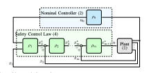
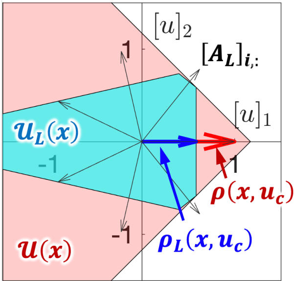
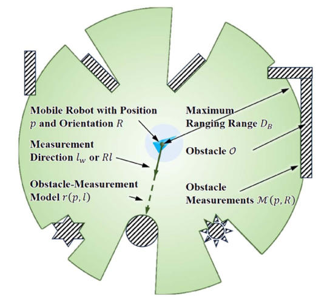
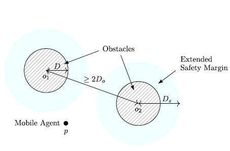
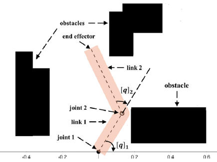
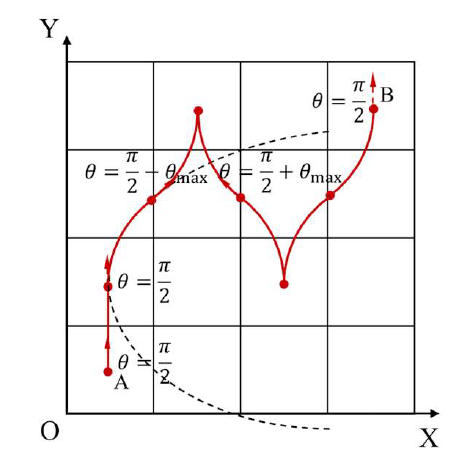
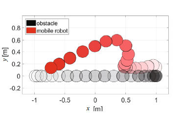
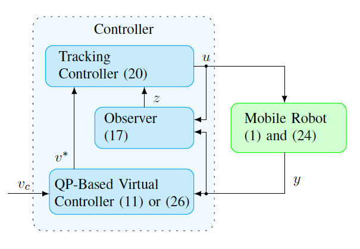

Si Wu
Ph.D., State Key Laboratory of Synthetical Automation for Process Industries, Northeastern University
Nonlinear system stability, safety-critical control, and constraint-satisfaction-based control
About
I received the Ph.D. degree in Control Science and Engineering from Northeastern University in 2025, after earning the M.E. degree in Control Engineering in 2020 and the B.E. degree in Automation in 2017. My research focuses on nonlinear system stability, safety-critical control, and constraint-satisfaction-based control. Current work includes feasible set reshaping approaches for constrained control systems, continuity analysis in convex optimization-based control, and small-gain-based analytical methods for safety-critical control of nonlinear systems under dynamic uncertainties. Related results have been published in IEEE Transactions on Automatic Control (including one regular paper and one technical note) and presented at international conferences such as IEEE CDC, IROS, and ECC. I received the Zhang Siying (CCDC) Outstanding Young Paper Award and participated in the IMAV 2019 competition held in Madrid, Spain, where our team won first place in the outdoor competition.
Publications
Monograph
- T. Liu*, S. Wu, Z. Liu, Z. P. Jiang. Robust Safety-Critical Control: Theory, Applications, and Experiments. Wiley-IEEE Press, 2025. (under contract, manuscript due Oct 2025).
Journal Papers
-

S. Wu, T. Liu*, Z. P. Jiang. “Constructive safety-critical control of nonlinear cascaded systems with multiple constraints and perturbations.” IEEE Trans. Automatic Control, 2025. (conditionally accepted). 
S. Wu, T. Liu*, Y. Hong, Z. P. Jiang, T. Chai. “Feasible-Set Reshaping for Constraint Qualification in Optimization-Based Control.” Preprint, arXiv:2512.12600, 2025.-

S. Wu, T. Liu*, W. Zhang, J. Ding, Z. P. Jiang, T. Chai. “Continuous safety-critical control of mobile robots with set-valued feedback in body-fixed coordinate frame.” IEEE Trans. Automatic Control, 2025. (accepted). -

T. Liu*, S. Wu, Z. Liu, Z. P. Jiang. “Safety-critical control under multiple constraints and dynamic uncertainties: A nonlinear small-gain approach.” Unmanned Systems, 2025. (accepted). -

Z. Liu, S. Wu, T. Liu*, Z. P. Jiang. “Continuous safety-critical control of Euler–Lagrange systems subject to multiple obstacles and velocity constraints.” Automatica, vol. 180, Art. 112404, 2025. -

Guo Yating, Wu Si, Xu Qian, Liu Tengfei*, Ding Jinliang. “Path planning for state-constrained nonholonomic mobile robots via improved hybrid A*.” Control Engineering, 2025. -

S. Wu, T. Liu*. “Safety control of a class of fully actuated systems subject to uncertain actuation dynamics.” Journal of Systems Science & Complexity, vol. 35, no. 2, pp. 543–558, 2022. -
Pang Qiang, Wu Si, Niu Bibi, Shi Ruiqi, Li Wenhao, Liu Tengfei*. “IMAV2019 outdoor small UAV control system design and implementation.” Control Engineering, 28(11): 2114–2122, 2021.
-
Liu Xiaohui, Wu Si, Liu Tengfei*. “Safety control of multi-agent formation via quadratic programming.” Control Engineering. (accepted).
-
Liu Feiyue, Wu Si, Liu Tengfei*. “Continuous safety control of mobile robots with shape constraints.” Control Engineering. (accepted).
-
Yao Chunpeng, Wu Si, Liu Tengfei*. “Safety control via hierarchical reinforcement learning and control barrier functions.” Control Engineering. (accepted).
Conference Papers
-

S. Wu, T. Liu*, J. Ding, Y. Li, T. Chai, Z. P. Jiang. “Safe output-feedback control for a class of linear systems with multiple output constraints.” IEEE CDC, 2025. (accepted). -
S. Wu, S. Wang, T. Liu*, Z. P. Jiang. “Safety-critical control of a class of underactuated systems: A case study on wheeled inverted pendulum.” European Control Conference (ECC), 2025.
-
S. Wu, T. Liu*, Z. P. Jiang. “Safety-critical control of a class of underactuated systems: A case study on wheeled inverted pendulum.” Chinese Control Conference (CCC), 2025. (extended abstract).
-
Xu Qian, Wu Si, Liu Tengfei*. “Safety control of nonholonomic mobile robots via switching: case study on unicycle.” CPCC, 2025. (extended abstract).
-
Z. Liu, S. Wu, T. Liu*. “Safety-critical control of Euler–Lagrange systems subject to position and velocity constraints.” CCDC, pp. 1501–1507, 2023.
-
Z. Liu, S. Wu, T. Liu*. “Safety-critical control of Euler–Lagrange systems subject to position constraints.” CCC, pp. 681–686, 2023.
Patents
- 吴思，刘腾飞，丁进良，柴天佑. “Real-time safety control set generation and safety filtering for mobile robots.” CN120848531B. (granted).
- 刘腾飞，潘禹扬，生远修，吴思，丁进良，谢威，张卫东. “Distributed cooperative safety control for multi-agent systems.” CN120044868B. (granted).
- 刘腾飞，刘飞跃，吴思，徐茜. “Robust safety control of mobile systems via LiDAR and barrier functions.” 2024102775094. (pending).
- 刘腾飞，李沅武，温惠钞，吴思，等. “QP-based UAV encirclement control.” 202511142764.9. (filed).
- 刘腾飞，温惠钞，李沅武，吴思，等. “MPC-CBF based UAV formation search and safety control.” 202511114638.2. (filed).
- 刘腾飞，温惠钞，李沅武，吴思，等. “Vision-KF based UAV target localization.” 202511115015.7. (filed).
- 刘腾飞，吴思，李明黎，庞少阳，等. “Communication coordination device and system for motion control experiments.” CN107065684B. (filed).
Education
- Ph.D. Control Science and Engineering, Northeastern University, State Key Lab of Synthetical Automation, 2020–2025. Advisor: Prof. Tengfei Liu.
- M.E. Control Engineering, Northeastern University, 2017–2020. Advisor: Prof. Tengfei Liu.
- B.E. Automation, Henan Polytechnic University, 2013–2017.
Honors
- 2024, CAST Youth Talent Support Program for PhD Students
- 2023, CCDC Zhang Siying Outstanding Youth Paper Award
- 2023, National Scholarship for Ph.D. Students
- 2023, Outstanding Graduate Student, Northeastern University
- 2019, IMAV2019 (Spain) outdoor competition, first place
Contact
Email: wusixstx@163.com
Resume: expsin.github.io/resume
Google Scholar: Si Wu